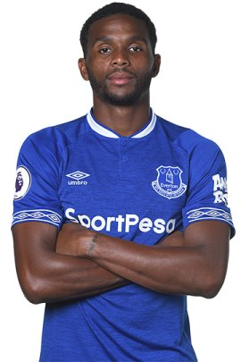
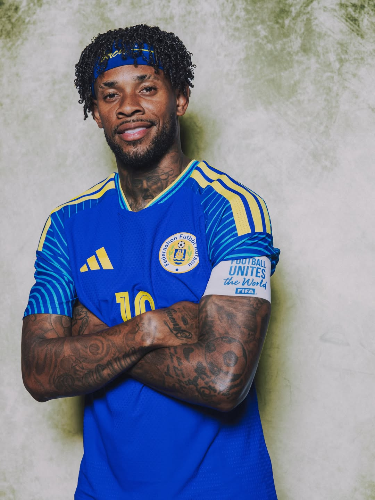
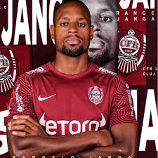

CURAZAO
La gran revelación del Caribe y debutante absoluto del torneo llega sin presiones, desplegando frescura, picardía caribeña y un fútbol técnico estructurado con bases europeas.




Tras la disolución de las Antillas Neerlandesas, Curazao reestructuró su federación logrando un ascenso meteórico que culminó con la histórica clasificación a su primer Mundial.
Hicieron historia regional al coronarse campeones de la Copa del Caribe en 2017 y alcanzar de manera consecutiva los cuartos de final de la Copa Oro de la Concacaf en 2019.
Sellar su boleto en las fases decisivas y de alta tensión de los play-offs de Concacaf los posiciona como el rival impredecible y la cenicienta del certamen.
CONCACAF (Norte, Centroamérica y Caribe)
El Sueño Azul / Los Chicos de la Isla
Disfrutar y dar la sorpresa. Al ser su debut histórico absoluto en una Copa del Mundo, el propósito caribeño es competir sin complejos y arrebatarle puntos a los gigantes del grupo.